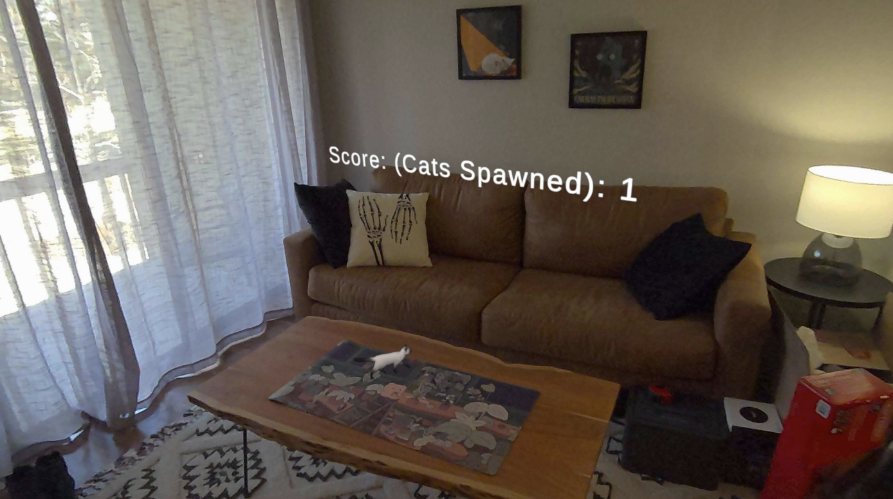

a. Motivation
The goal of this project was to create an augmented reality game that utilizes the Meta Quest 3's capabilities. We wanted to explore the potential of AR in gaming and how it can enhance user experience. The idea of herding cats was chosen as a fun and engaging concept that would allow us to experiment with the technology while having simple interaction and mechanics.
b. What Was Built
In our VR game, Herding Cats, cats continuously appear on a table and begin crawling toward the edges. The player's objective is to grab and pull them back to the center to keep them from falling off. The game features a scoring system that tracks how many cats you successfully manage.
Felines are causing havoc! Race against your opponents to round up four-of-a-kind. But don’t let the cat out the bag! Bring fun, excitement and lightning reflexes to your next gathering with Herding Cats, the fast-paced card grabbing game.a. How the Project Was Built
The game was built in Unity 5 with C# using the Meta SDK and the Meta Quest 3. We also utililze the Mixed Reality Utility Kit (MRUK) to make calculations about the physical environment. We used github so that everyone could work on different parts independently and sync things up.
Github Link: https://github.com/pocket-98/ATLS5510-Herding-Cats
b. Design Process and Ideation
We started by making sure that everyone was able to build the Meta Quest app for android in Unity through the git repository and that we could all make changes to a basic AR app without things breaking between computers. This was quite the challenge because some of our development machines were incapable of building without errors, so we had to pivot from using Unity 6 to Unity 5.
We then formed different specialties between debugging, designing, integration, modeling/animation, and coding.
Specifically for modeling the cat, Blender was used to create a cat model. This involved making a very high polygon mesh and doing a retopology down to a lower poly mesh. The Mesh was UV unwrapped to allow for texturing and. The model was then rigged and animated using Blender's animation tools and Inverse Kinematics for realistic movement. The animation was exported as a .fbx file and imported into Unity. The cat model was then set up with a simple animation controller to allow for basic movement and idle animations.
For creating the environment for the game, custom scripts had to be made to determine the largest surface for which to then add rigid body, collision, and physics to. Also the player's 3D position had to be captured to allow for the scoreboard to appear in the correct position to be viewed while playing. Controlling the cats ragdoll physics also required some custom scripts for handling rotation and movement as the cats were potentially picked up and placed back on the table. The cat's had autonomy when spawned to walk towards the edge of the table which tied into the mechanism for ending the game when the player could no longer stop the cats from walking over the edge.
There are different areas where the game could be improved. More animation states could be added such as a pick up animation. There were problems with importing the rigging from Blender into Unity, so approaching this in a more compatible way would be ideal.
For the gameplay itself, there is room to improve on the walking logic for the cats and also to add in a dedicated start and menu screen for difficulty settings to be able to control the rate of cats spawning and the speed at which they walk. The game could also be improved by adding a timer to the game to make it more competitive and challenging.
The game AI for cat behavior could be iterated upon to determine which direction of walking would make the game the most difficult for the player. There is also the possiblity of making the game multiplayer allowing for multiple people to try to manage all of the cats or maybe having a mechanism where the goal is to have as many cats on one player's side of the table before the time runs out.